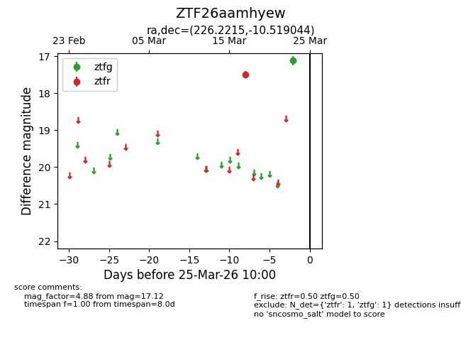
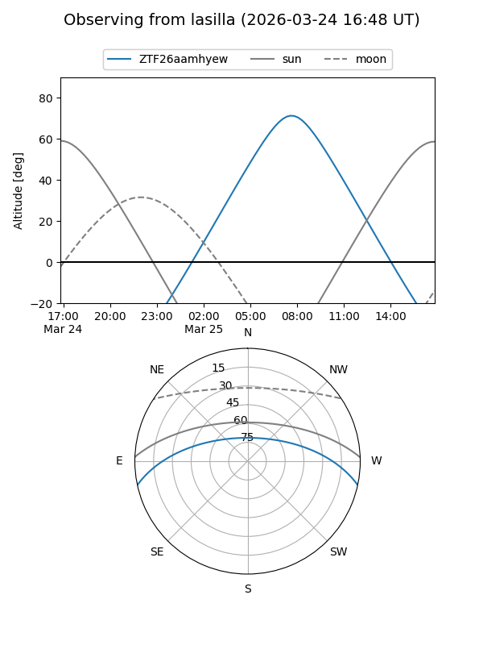
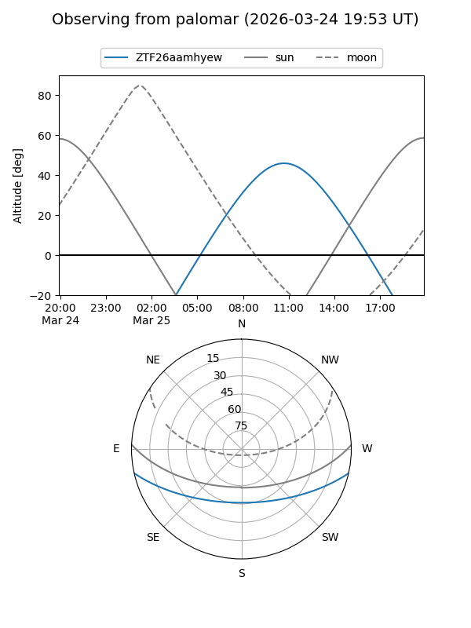

ZTF26aamhyew
Target ZTF26aamhyew at 2026-03-25 10:03
Aliases and brokers:
FINK: link
Lasair: link
ALeRCE: link
alt names
ZTF26aamhyew (ztf,fink_ztf)
Coordinates:
equatorial (ra, dec) = 226.2215,-10.51904
equatorial (HMS+DMS) = 15:04:53.16,-10:31:08.56
galactic (l, b) = (348.1320,+40.36026)
Flags:
Photometry:
last ztfg=17.12, ztfr=17.49
1 ztfg, 1 ztfr detections
Lightcurve

Visibility


Additional plots